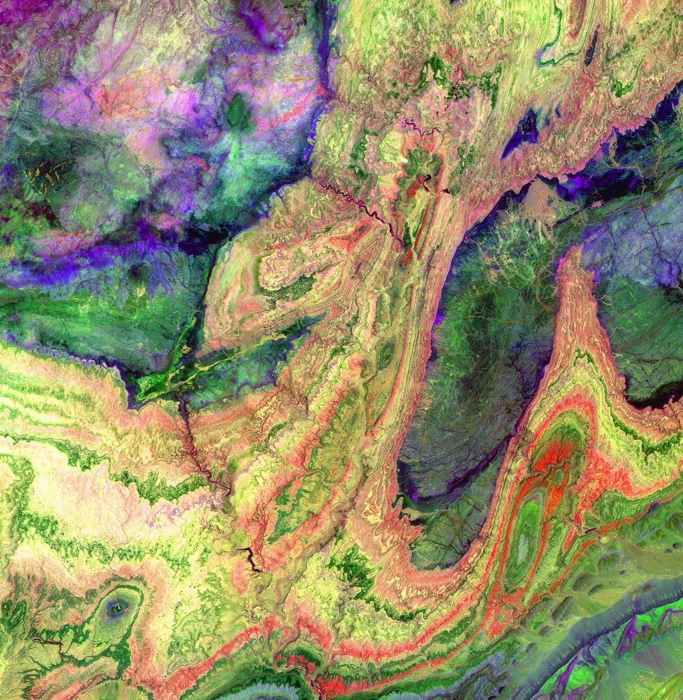

Part 2: Minerals, Rocks and Plates · Chapter 6 of 15
Rocks from Inside the Earth
Rocks that were melted, or squeezed and baked without melting.

Geologists sort rocks into three great families according to how they formed. Sedimentary rocks are covered in the chapter on strata. The other two families form deep underground.
Igneous rocks
Igneous rocks crystallize from molten rock. If magma cools slowly, deep underground, the crystals have time to grow large, giving coarse-grained rocks such as granite and gabbro. If it erupts and cools quickly at the surface, the crystals stay tiny, as in basalt. If it cools almost instantly, there is no time for crystals at all and the result is natural glass, obsidian.
Metamorphic rocks
Metamorphic rocks are existing rocks transformed by heat and pressure without melting. Minerals recrystallize into new, more stable forms. Mudstone becomes slate when it is squeezed, then schist, with glittering flakes of mica and often red garnet crystals, at higher temperatures. At higher temperatures still, it becomes banded gneiss. Limestone turns into marble.
Folding and faulting
The same forces that cause metamorphism also deform rocks on a large scale. Slow, steady sideways pressure bends layers into folds, from tiny crumples to arches many kilometres across. Where rock is too brittle to bend, it breaks, and the two sides slip past each other along a fault. Sudden slip on a fault is what causes an earthquake.
Key terms
- igneous rock
- Rock that formed when molten rock cooled and hardened. Granite is an igneous rock.
- metamorphic rock
- Rock that was re-made from existing rock by great heat and pressure, without melting.
- schist
- A metamorphic rock that was once mud. It often contains garnet crystals and flaky mica.
- gneiss
- A banded metamorphic rock that was folded deep inside the earth’s crust.
- garnet
- A mineral that grows as crystals inside metamorphic rock. It shows as dark spots in schist.
- mica
- A flaky mineral that splits into very thin sheets.
- folding
- The bending of rock layers by heavy, slow, sideways pressure.
- faulting
- The cracking and slipping of rock along a break when it is squeezed or stretched.
- recrystallize
- To form new crystals from old ones. In metamorphic rock this happens without melting.
Check your understanding
Think of your answer, then open each question to compare.
Why does granite have large crystals and basalt small ones?
Granite cooled slowly deep underground, giving crystals time to grow; basalt cooled quickly at the surface.
Does metamorphic rock form by melting?
No. It forms when existing rock is changed by heat and pressure while staying solid.
What is the difference between a fold and a fault?
A fold is a bend in rock layers; a fault is a break along which the rocks have moved.